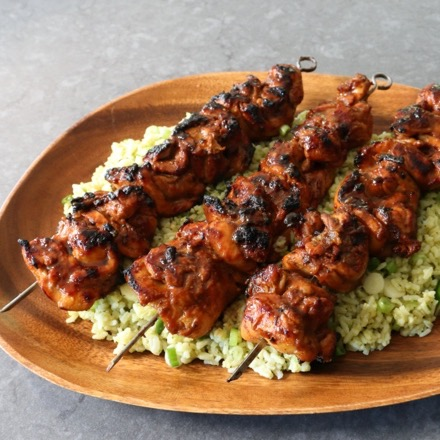

Filipino-Style Barbecue Chicken

I'm showing you how I make what is probably the best barbecue chicken you've never had, which I should've already
done, but I've hesitated since one of the main ingredients is banana ketchup. But then I remembered that I teach
people to cook things, so this includes a recipe for this special ingredient.
Ingredients
For the Banana Ketchup:
- 1 medium very ripe banana, mashed
- ¼ cup tomato paste
- ¼ cup apple cider vinegar
- 2 tablespoons brown sugar
- 2 teaspoons vegetable oil
- 2 teaspoons freshly grated ginger
- ½ teaspoon onion powder
- ¼ teaspoon garlic powder
- ¼ teaspoon cayenne pepper
- ¼ teaspoon kosher salt, or to taste
- ⅛ teaspoon ground allspice
- ⅛ teaspoon ground turmeric
- ¼ cup water
For the Chicken and Marinade:
- ½ cup prepared banana ketchup
- ¾ cup lemon-lime soda (such as 7-Up®)
- ½ cup soy sauce
- 4 cloves crushed garlic
- 2 tablespoons brown sugar
- 1 teaspoon freshly ground black pepper
- 1 medium lemon, juiced
- 2½ pounds skinless, boneless chicken thighs, cut in half
For the Basting Sauce:
- 3 tablespoons reserved banana ketchup
- 3 tablespoons soy sauce
- 1 tablespoon brown sugar
- 1 tablespoon vegetable oil
- 1 teaspoon fish sauce
- Mash ripe banana, tomato paste, vinegar, brown sugar, oil, ginger, onion powder, garlic powder, cayenne,
salt, allspice, and turmeric together in a saucepan. Add water and stir to combine.
- Place over medium-high heat and bring to a simmer. Stir to combine. Reduce heat to medium and simmer until
reduced and thickened, 7 to 10 minutes. Remove from heat; reserve 3 tablespoons for the basting sauce,
leaving about 1/2 cup for the marinade.
- Transfer ½ cup banana ketchup to a bowl and add lemon-lime soda, soy sauce, garlic, brown sugar, black
pepper, and lemon juice for the marinade. Whisk until combined. Add halved chicken thighs and toss to coat.
- Cover with plastic wrap and marinate in the refrigerator for 4 to 18 hours.
- When you are ready to cook the chicken, combine reserved 3 tablespoons banana ketchup, soy sauce, brown
sugar, oil, and fish sauce in a small bowl for basting sauce.
- Preheat a charcoal grill until coals are very hot.
- Remove chicken from the refrigerator and place on metal skewers, folding in half with the smooth side on the
outside, the rougher side folded in.
- Grill chicken over hot coals until no longer pink in the centers, 15 to 20 minutes, turning and basting
every 2 to 3 minutes. Serve with accumulated juices or extra basting sauce.